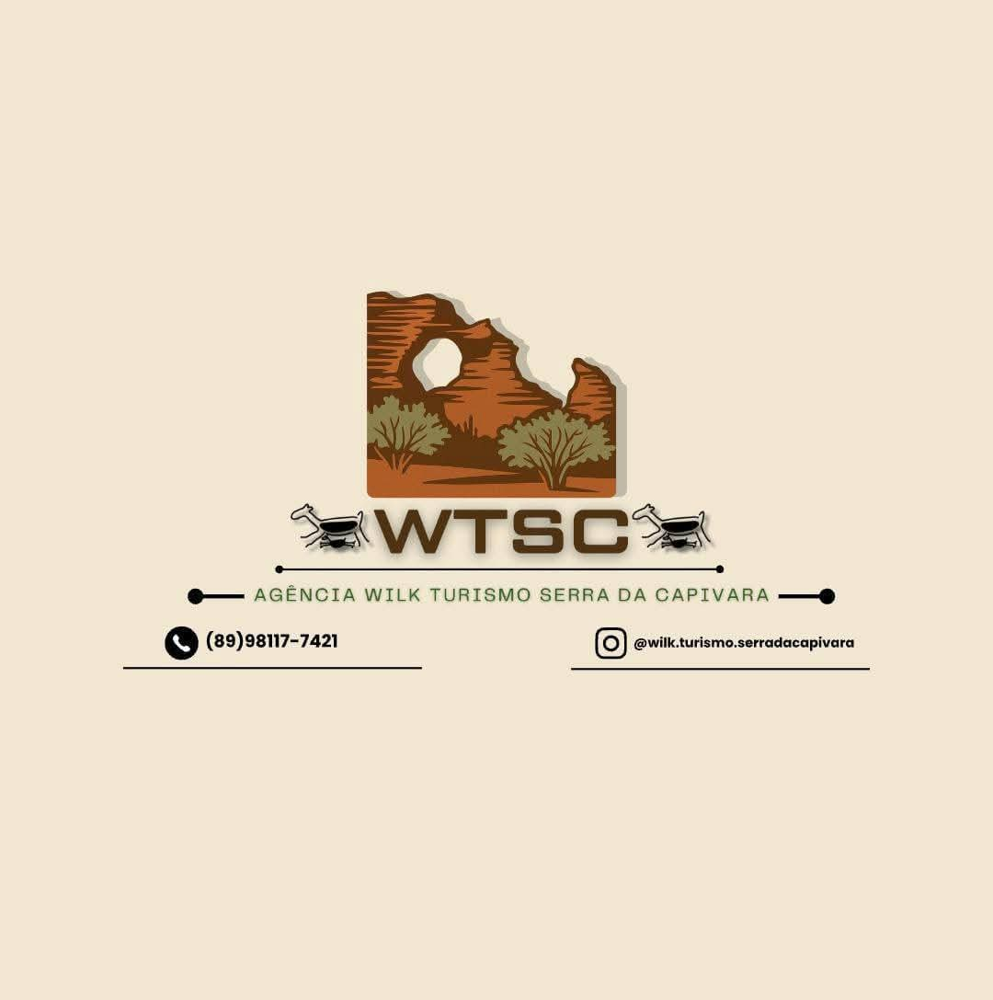
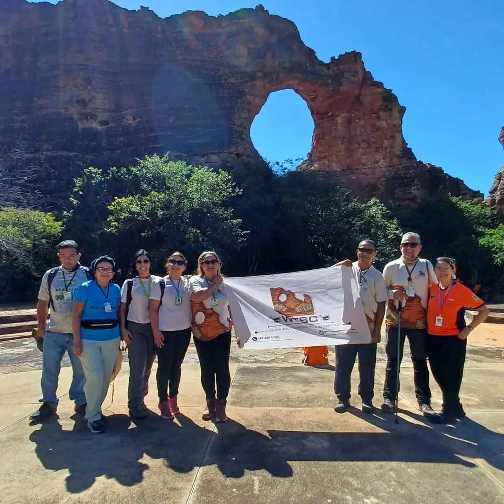
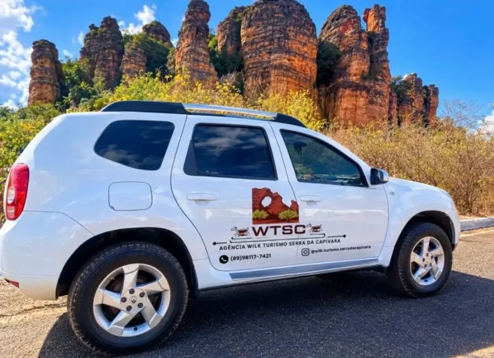

Escuta de verdade
Entendemos seu estilo, seu ritmo e o que torna uma viagem especial para você.

EXPERIÊNCIAS NA SERRA DA CAPIVARA
Na WTSC Turismo, cada roteiro nasce da sua vontade de descobrir a Serra da Capivara. Cuidamos dos detalhes para você só guardar as memórias.
Falar com um consultor →QUEM SOMOS
Somos uma empresa de turismo especializada em experiências personalizadas na Serra da Capivara. Do primeiro “e se?” ao seu retorno para casa, reunimos hospedagem, transporte e passeios em um caminho tranquilo, seguro e com a sua cara.
Entendemos seu estilo, seu ritmo e o que torna uma viagem especial para você.
Nada de pacotes engessados: cada escolha é pensada para o seu momento.
Você tem uma equipe por perto antes, durante e depois da sua viagem.
POR TRÁS DA VIAGEM

NOSSA EQUIPE
Consultores apaixonados por viagens acompanham cada escolha com atenção, experiência e um atendimento próximo.

TRANSPORTES
Selecionamos opções seguras e confortáveis para que você aproveite desde a saída até os encantos da Serra da Capivara.